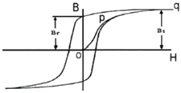
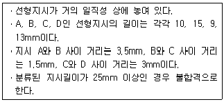

자기비파괴검사기능사 (2013-01-27 기출문제)
1과목: 자기탐상시험법
1. 알루미늄합금의 재질을 판별하거나 열처리 상태를 판별하기에 가장 적합한 비파괴검사법은?
- 적외선검사
- 스트레인측정
- 와전류탐상검사
- 중성자투과검사
(정답률: 59%)

2. 비파괴검사 방법 중 검지제의 독성과 폭발에 주의해야 하는 것은?
- 누설검사
- 초음파탐상검사
- 방사선투과검사
- 열화상검사
(정답률: 73%)
3. 방사선이 물질과의 상호작용에 영향을 미치는 것과 거리가 먼 것은?
- 반사 작용
- 전리 작용
- 형광 작용
- 사진 작용
(정답률: 48%)
4. 다음 중 액체 내에 존재할 수 있는 파는?
- 표면파
- 종파
- 횡파
- 판파
(정답률: 67%)
5. 누설가스가 매우 높은 속도에서 발생하는 흐름으로 레이놀드수 값에 좌우되는 흐름은?
- 층상흐름
- 교란흐름
- 분자흐름
- 전이흐름
(정답률: 62%)
6. 자분탐상시험에서 시험체에 전극을 접촉시켜 통전함에 따라 시험체에 자계를 형성하는 방식이 아닌 것은?
- 프로드법
- 자속관통법
- 직각통전법
- 축통전법
(정답률: 67%)
7. 방사선발생장치에서 전자의 이동을 균일한 방향으로 제어하는 장치는?
- 표적물질
- 음극 필라멘트
- 진공압력 조절장치
- 집속컵
(정답률: 60%)
8. 다음 중 육안검사의 장점이 아닌 것은?
- 검사가 간단하다.
- 검사속도가 빠르다.
- 표면결함만 검출 가능하다.
- 피검사체의 사용 중에도 검사가 가능하다.
(정답률: 58%)
9. 열전달에서 일반적으로 열을 전달하는 방식이 아닌 것은?
- 전도
- 대류
- 복사
- 흡수
(정답률: 69%)
10. 길이 0.4m, 직경 0.08m인 시험체를 코일법으로 자분탐상검사할 때 필요한 암페어-턴(Ampere-Turn) 값은?
- 4000
- 5000
- 6000
- 7000
(정답률: 62%)
11. 전류의 흐름에 대한 도선과 코일의 총 저항을 무엇이라 하는가?
- 유도리액턴스
- 인덕턴스
- 용량리액턴스
- 임미던스
(정답률: 74%)
12. 수세성 형광 침투탐상검사에 대한 설명으로 옳은 것은?
- 유화처리 과정이 탐상감도에 크게 영향을 미친다.
- 얕은 결함에 대하여는 결함 검출 감도가 낮다.
- 거진 시험면에는 적용하기 어렵다.
- 잉여 침투액의 제거가 어렵다.
(정답률: 49%)
13. 초음파의 특이성으르 기술한 것 중 옳은 것은?
- 파장이 길기 때문에 지향성이 둔하다.
- 액체 내에서 잘 전파한다.
- 원거리에서 초음파 빔은 확산에 의해 약해진다.
- 고체 내에서는 횡파만 존재한다.
(정답률: 80%)
14. 후유화성 침투탐상검사에 대한 설명으로 옳은 것은?
- 시험체의 탐상 후에 후처리를 용이하게 하기 위해 유화제를 사용하는 방법이다.
- 시험체를 유화제로 처리하고 난 후에 침투액을 적용하는 방법이다.
- 시험체를 침투처리하고 나서 유화제를 적용하는 방법이다.
- 유화제가 함유되어 있는 현상제를 적용하는 방법이다.
(정답률: 69%)
15. 자분탐상시험의 기본 3대 요소가 아닌 것은?
- 준비 및 자화
- 탈자
- 현상제 제거
- 검사
(정답률: 75%)
16. 자분탐상시험시 표면 결함 자분지시와 비교하여 일반적으로 표면직하에 있는 결함의 자분지시는 어떤 형태로 나타나는가?
- 예리한 자분지시가 나타난다.
- 자분지시가 나타나지 않는다.
- 항상 원형인 자분지시가 나타난다.
- 약간 불명확하고 희미한 자분지시가 나타난다.
(정답률: 68%)
17. 길이가 6인치, 직경이 2인치인 봉재를 권수가 3인 코일을 사용하여 선형자화법으로 검사하고자 할 때 이때의 전류값은?
- 1500[A]
- 2000[A]
- 3000[A]
- 5000[A]
(정답률: 56%)
18. 자분탐상시험시 자력선이 불연속과 평행하게 진행할 때 자분모양의 지시는?
- 선명한 자분지시가 나타난다.
- 선명한 의사지시가 나타난다.
- 흩어진 자분지시가 나타난다.
- 자분지시가 나타나지 않는다.
(정답률: 57%)
19. 프로드법에 대한 설명으로 옳은 것은?
- 자화전류 값은 전극 간격이 넓게 됨에 따라 감소시켜야 한다.
- 대형 시험체를 1회 통전으로 전체를 자화시키는 방법이다.
- 시험체의 넓은 두 점에 전극을 설정하여 전면적에 전류를 흘리는 방법이다.
- 전극에 가까울수록 자계는 강하고 양쪽 전극으로부터 멀어질수록 약하게 된다.
(정답률: 60%)
20. 형광습식법에 의한 연속법의 자분탐상시험 공정을 바르게 나타낸 것은?
- 전처리 → 자화 → 자분적용 → 자화종료 → 관찰
- 전처리 → 자분작용 → 자화 → 자화종료 → 관찰
- 전처리 → 자화 → 자화종료 → 자분작용 →관찰
- 전처리 → 자분작용 → 자화 → 자화종료 → 후처리 → 관찰
(정답률: 81%)
2과목: 자기탐상관련규격
21. 야외 현장의 높은 곳에 위치한 용접부에 가장 적합한 자분탐상검사법은?
- 코일법
- 극간법
- 프로드법
- 전류관통법
(정답률: 70%)
22. 자분탐상시험에서 강봉에 전류를 통하였을 때 가장 잘 검출될 수 있는 불연속은?
- 전류방향과 평행한 불연속
- 지그재그식 날카로운 모양의 불연속
- 불규칙한 모양의 개재물
- 전류방향과 90도 각도를 갖는 불연속
(정답률: 45%)
23. 그림은 자화곡선의 그래프이다. o-p-q 선이 나타내는 의미는?

- 포화 자속밀도
- 초기 자화곡선
- 최대 투자곡선
- 잔류자기 곡선
(정답률: 63%)
24. 자분탐상시험시 선형자장을 발생시키는 방법은?
- 코일법
- 프로드법
- 자속관통법
- 전류관통법
(정답률: 62%)
25. 자분탐상검사에 대한 특징으로 올바른 것은?
- 자분모양 지시로 금속내부 조직을 알 수 있다.
- 시험체 표면균열의 검출능이 뛰어나다.
- 비자성체는 잔류자장을 이용하면 결함 검출능이 우수하다.
- 대형 부품인 경우에도 1회 통전으로 시험체 전체의 탐상에 효과적이다.
(정답률: 80%)
26. 자분탐상시험에 사용되는 자외선등의 필터(fillter)는 깨진 것을 사용하지 않는데 그 주된 이유는?
- 작업자의 눈에 실명할 정도로 손상을 입힐 우려가 있기 때문이다.
- 과도한 자외선 방출로 작업자가 방사선을 피폭받아 유전적인 피해가 우려되기 때문이다.
- 시험체 표면에서 자외선의 강도가 너무 강하여 결함 검출을 전혀 할 수 없기 때문이다.
- 작업자의 피부 손상 등을 방지하기 위해서이다.
(정답률: 74%)
27. 길이가 8인치이고 지름이 3인치인 봉재를 축통전법으로 검사를 한다면 직류나 정류전류를 사용할 때, 필요한 자화전류치는 얼마가 적당한가?
- 800[A]
- 1200[A]
- 2700[A]
- 7450[A]
(정답률: 62%)
28. 철강재료의 자분탐상 시험방법 및 자분모양의 분류(KS D 0213)의 자분모양에 대한 설명으로 옳은 것은?
- 표면 개구 결함은 자분모양을 제거하고 나타난 흠을 관찰하여도 균열인지 판정이 불가능하다.
- 자분모양은 깊이 방향 흠의 치수에 관한 정보를 주지 않는다.
- 자분모양이 확인되면 흠 이외의 의사모양까지 모두 포함해 기록 관리한다.
- 적정한 자화방법과 자분을 적용하여도 자분길이는 실제 흠 길이의 2배로 추정한다.
(정답률: 56%)
29. 철강재료의 자분탐상 시험방법 및 자분모양의 분류(KS D 0213)에 의해 자화할 때 특히 고려하여야 할 사항으로 옳은 것은?
- 자계의 방향은 예측되는 흠의 방향에 대하여 가능한 한 직각으로 한다.
- 자계의 방향은 예측되는 흠의 방향에 대하여 가능한 한 평행하게 한다.
- 자계의 방향을 시험면에 가능한 한 직각으로 한다.
- 시험면을 태워서는 안될 경우는 시험체에 직접 통전하는 자화방법을 선택한다.
(정답률: 56%)
30. 철강재료의 자분탐상 시험방법 및 자분모양의 분류(KS D 0213)에서 C형 표준시험편의 인공결함에 관한 설명으로 옳은 것은?
- 인공 흠은 짧은 곡선형으로 되어 있다.
- 인공 흠은 10μm 간격으로 수 개가 배열되어 있다.
- 인공 흠의 크기가 다른 수 개의 원형으로 되어 있다.
- 인공 흠의 치수는 깊이 8±1μm, 나비50±8μm 이다.
(정답률: 51%)
31. 철강재료의 자분탐상 시험방법 및 자분모양의 분류(KS D 0213)에서 C형 표준시험편의 사용방법으로 적합하지 않는 것은?
- 용접부의 그루브면 등 좁은 부분에서 A형의 적용이 곤란한 경우에 사용한다.
- 판의 두께는 50μm로 한다.
- 자분의 적용은 잔류법으로 한다.
- 시험면에 잘 밀착되도록 적당한 양면 접착테이프로 시험면에 붙여 사용한다.
(정답률: 63%)
32. 철강재료의 자분탐상 시험방법 및 자분모양의 분류(KS D 0213)에 의해 시험체를 자화할 때 자계의 방향 및 강도를 확인하고자 사용되는 표준시험편이 아닌 것은?
- A1형
- A2형
- B형
- C형
(정답률: 59%)
33. 철강재료의 자분탐상 시험방법 및 자분모양의 분류(KS D 0213)에 따라 다음 조건과 같은 경우 올바른 평가는?

- 지시 A, B, C, D는 연속한 지시로 불합격이다.
- 지시 A는 합격이고, B, C, D는 연속한 지시이므로 불합격이다.
- 지시 A와 D는 독립한 지시이므로 합격이고, B, C는 연속한 지시이나 길이가 24mm 이므로 합격이다.
- 지시 A와 D는 독립한 지시이므로 합격이고, B, C는 연속한 지시이므로 불합격이다.
(정답률: 72%)
34. 철강재료의 자분탐상 시험방법 및 자분모양의 분류(KS D 0213)에 의해 표준(대비)시험편을 사용할 때 자분의 적용 방법으로 옳은 것은?
- A형 시험편은 잔류법을 적용
- B형 시험편은 잔류법을 적용
- A형과 B형은 연속법, C형은 잔류법을 적용
- A형, B형 및 C형 모두 연속법을 적용
(정답률: 58%)
35. 철강재료의 자분탐상 시험방법 및 자분모양의 분류(KS D 0213)에 대한 설명으로 옳은 것은?(오류 신고가 접수된 문제입니다. 반드시 정답과 해설을 확인하시기 바랍니다.)
- 인공홈의 길이는 6mm이다.
- 잔류법으로 사용한다.
- 시험편의 크기는 30×30mm이다.
- 시험편의 두께는 15μm이다.
(정답률: 58%)
36. 철강재료의 자분탐상 시험방법 및 자분모양의 분류(KS D 0213)에 의해 자분탐상시험을 할 때 콘트라스트(cont-rast)가 좋은 자분을 선택하는 이유는?
- 자분의 이동성 용이
- 자분의 관찰성 용이
- 시험품의 통전성 용이
- 시험품의 이동성 용이
(정답률: 72%)
37. 철강재료의 자분탐상 시험방법 및 자분모양의 분류(KS D 0213)에 따른 통전시간 설정으로 옳은 것은?
- 충격전류는 1/60초 이상으로 한다.
- 잔류법은 원칙적으로 1/4~1초로 한다.
- 충격전류는 일반적으로 1회 적용한다.
- 연속법은 통전 완료 후 자분을 적용한다.
(정답률: 77%)
38. 철강재료의 자분탐상 시험방법 및 자분모양의 분류(KS D 0213)에 의해 자분탐상시험 후 탈자를 해야 할 경우로 옳은 것은?
- 계속하여 하는 시험의 자화가 전회의 자화에 의해 악 영향을 받을 우려가 있을 때
- 시험체의 잔류자기가 이후의 기계가공에 악 영향을 미칠 우려가 없을 때
- 시험체의 잔류자기가 계측장치 등에 악 영향을 미칠 우려가 없을 때
- 시험체가 마찰부분에 사용되는 것으로 철분 등에 흡인하여 마모의 증가 우려가 없을 때
(정답률: 78%)
39. 철강재료의 자분탐상 시험방법 및 자분모양의 분류(KS D 0213)의 해설에 따라 근자외선의 조사등은 사용상태에 따라 적시에 필터를 떼어 내고 청소를 하여야 하는 경우가 있다. 청소 부분에 해당되지 않는 것은?
- 필터의 표면
- 반사판
- 램프의 분해 소재
- 필터의 뒷면
(정답률: 66%)
40. 철강재료의 자분탐상 시험방법 및 자분모양의 분류(KS D 0213)에 의한 자분탐상시험에서 자외선등의 점검주기로 맞는 것은?
- 적어도 월 1회 이상
- 적어도 년 1회 이상
- 적어도 년 3회 이상
- 매 측정시마다 2회 이상
(정답률: 65%)
3과목: 금속재료일반 및 용접일반
41. 철강재료의 자분탐상 시험방법 및 자분모양의 분류(KS D 0213)에 따른 B형 대부시험편의 사용 용도가 아닌 것은?
- 장치의 성능 조사
- 자분의 성능 조사
- 검사액의 성능 조사
- 잔류자기의 성능 조사
(정답률: 50%)
42. 철강재료의 자분탐상 시험방법 및 자분모양의 분류(KS D 0213) KS 규격에 의한 시험결과 나타난 자분모양이 다음 중 의사모양인 것은?
- 불연속지시
- 결함지시
- 재질경계지시
- 관련지시
(정답률: 59%)
43. 고온에서 사용하는 내열강 재료의 구비조건에 대한 설명으로 틀린 것은?
- 기계적 성질이 우수해야 한다.
- 조직이 안정되어 있어야 한다.
- 열팽창에 대한 변형이 커야 한다.
- 화학적으로 안정되어 있어야 한다.
(정답률: 85%)
44. 고체 상태에서 하나의 원소가 온도에 따라 그 금속을 구성하고 있는 원자의 배열이 변하여 두 가지 이상의 결정구조를 가지는 것은?(오류 신고가 접수된 문제입니다. 반드시 정답과 해설을 확인하시기 바랍니다.)
- 전위
- 동소체
- 고용체
- 재결정
(정답률: 19%)
45. Ni-Fe계 합금인 인바(Invar)는 길이 측정용 표준자, 바이메탈, VTR 헤드의 고정대 등에 사용되는데 이는 재료의 어떤 특성 때문에 사용하는가?
- 자성
- 비중
- 전기저항
- 열팽창계수
(정답률: 66%)
46. 니켈-크롬 합금 중 사용한도가 1000℃까지 측정할 수 있는 합금은?
- 망가닌
- 우드메탈
- 배빗메탈
- 크로멜-알루멜
(정답률: 59%)
47. 탄소가 0.50~0.70% 이고, 인장강도는 590~690Mpa이며, 축, 기어, 레인, 스프링 등에 사용되는 탄소강은?
- 톰백
- 극연강
- 반연강
- 최경강
(정답률: 44%)
48. 다음 중 청동과 황동 및 합금에 대한 설명으로 틀린 것은?
- 청동은 구리와 주석의 합금이다.
- 황동은 구리와 아연의 합금이다.
- 톰백은 구리에 5~20%의 아연을 함유한 것으로, 강도는 높으나 전연성이 없다.
- 포금은 구리에 8~12% 주석을 함유한 것으로 포신의 재료 등에 사용되었다.
(정답률: 70%)
49. 내마멸용으로 사용되는 애시큘러 주철의 기지(바탕) 조직은?
- 베이나이트
- 소르바이트
- 마텐자이트
- 오스테나이트
(정답률: 38%)
50. 다음 중 순철의 자기변태 온도는 약 몇 ℃인가?
- 100℃
- 768℃
- 910℃
- 1400℃
(정답률: 66%)
51. 동일 조건에서 전기전도율이 가장 큰 것은?
- Fe
- Cr
- Mo
- Pb
(정답률: 42%)
52. 다음 중 비정질 합금에 대한 설명으로 틀린 것은?
- 균질한 재료이고 결정 이방성이 없다.
- 강도는 높고 연성도 크나 가공경화는 일으키지 않는다.
- 제조법에는 단롤법, 쌍롤법, 원심 급냉법 등이 있다.
- 액체 급냉법에서 비정질재료를 용이하게 얻기 위해서는 합금에 함유된 이종원소의 원자반경이 같아야 한다.
(정답률: 36%)
53. Au의 순도를 나타내는 단위는?
- K(carat)
- P(pound)
- %(percent)
- μm(micron)
(정답률: 77%)
54. 탄소강 중에 포함된 구리(Cu)의 영향으로 틀린 것은?
- 내식성이 향상시킨다.
- Ar1의 변태점을 증가시킨다.
- 강재 압연시 균열의 원인이 된다.
- 강도, 경도, 탄성한도를 증가시킨다.
(정답률: 42%)
55. 다음 중 비중이 가장 가벼운 금속은?
- Mg
- Al
- Cu
- Ag
(정답률: 76%)
56. 주강과 주철을 비교 설명한 것 중 틀린 것은?
- 주강은 주철에 비해 용접이 쉽다.
- 주강은 주철에 비해 용융점이 높다.
- 주강은 주철에 비해 탄소량이 적다.
- 주강은 주철에 비해 수축률이 적다.
(정답률: 47%)
57. 다음의 금속 결함 중 체적 결함에 해당되는 것은?
- 전위
- 수축공
- 결정립계 경계
- 침입형 불순물 원자
(정답률: 48%)
58. 정격 2차 전류가 200A, 정격 사용률이 40%인 아크 용접기로 150A의 전류 사용시 허용 사용률은 약 얼마인가?
- 58%
- 71%
- 60%
- 82%
(정답률: 57%)
59. 산소와 아세틸렌을 이론적으로 1:1 정도 혼합시켜 연소할 때 용접토치에서 얻는 불꽃은?
- 중성 불꽃
- 탄화 불꽃
- 산화 불꽃
- 환원 불꽃
(정답률: 54%)
60. TIG 용접에서 직류 정극성으로 용접이 가능한 재료는?
- 스테인리스강
- 마그네슘 주물
- 알루미늄 판
- 알루미늄 주물
(정답률: 62%)